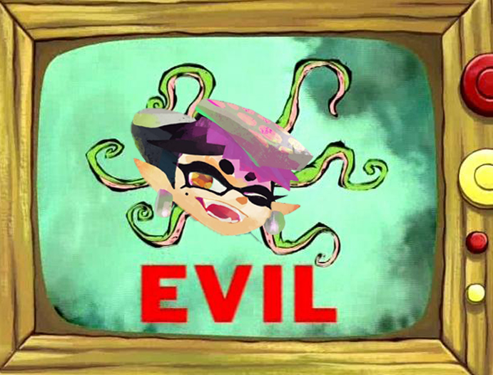
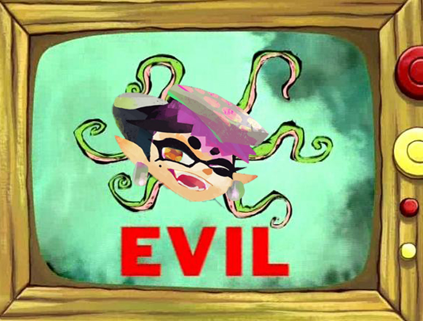
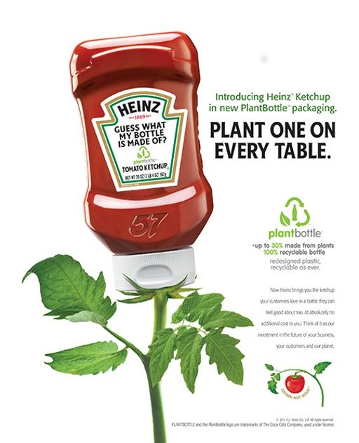
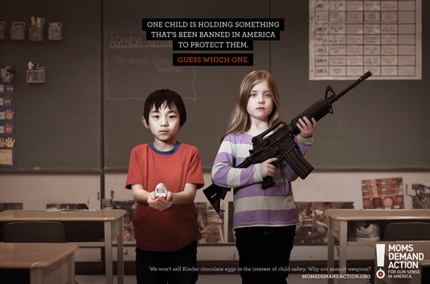

As you can see from just the several examples i've given you I am far from being an expert and I have much to learn if I ever plan to be a professional at this unique yet highly creative field.
Now these are professional images and ads crafted by the brighest minds of this catergory
 As you can see some of these ads vary on their message while portraying a theme yet are unique in their own ways. A good ad does not require to be flashy looking or highly rendered to be effective and eye pleaseing. Some like the Heinz one are a tad cheesy yet makes you want some of their brand while others like the one with the two children question your views and standpoints on an opinion.
Go to page two Go to final page